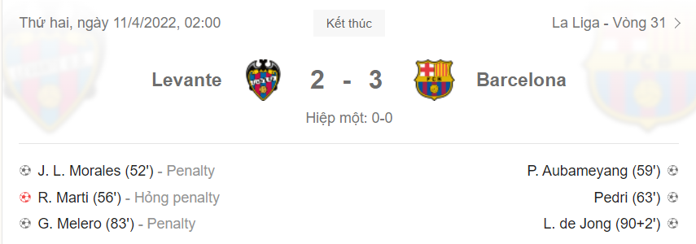
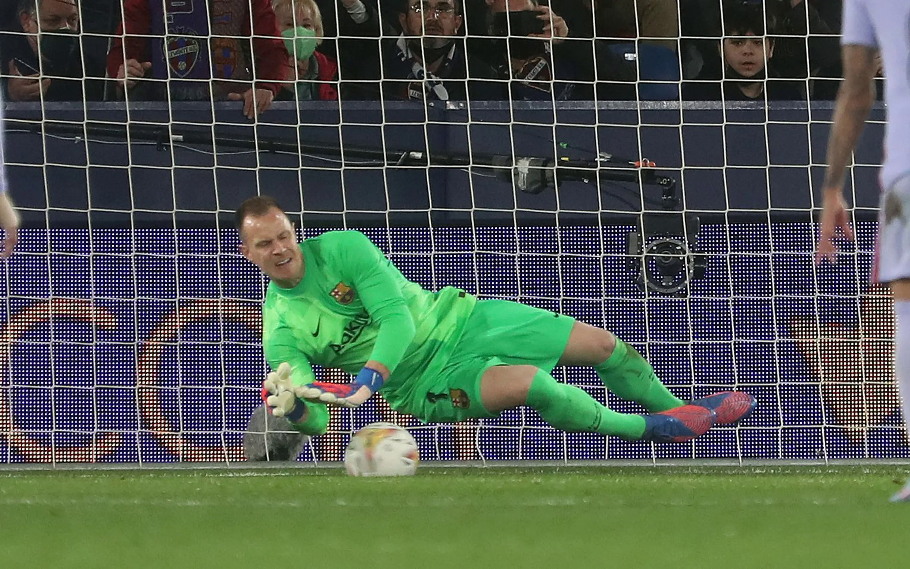

Thứ hai, 11/4/2022, 06:11 (GMT+7)
Barca thắng trận thứ bảy liên tiếp tại La Liga
TÂY BAN NHA - Nhận hai bàn thua từ ba lần bị thổi phạt đền, nhưng Barca vẫn thắng ngược chủ nhà Levante 3-2 ở vòng 31 La Liga ngày 10/4
Sau hiệp đầu bất phân thắng bại và có phần tẻ nhạt trên sân Ciutat de Valencia, hai đội bất ngờ tạo nên hiệp hai sôi động với một loạt diễn biến bất ngờ. Chủ nhà Levante được hưởng ba quả phạt đền và tận dụng thành công hai trong số đó để mở tỷ số ở phút 52 rồi gỡ hoà 2-2 ở phút 83. Nhưng ngần ấy không đủ để họ giật điểm trước Barca sở hữu nhiều cá nhân xuất sắc hơn.

Aubameyang đánh đầu gỡ 1-1 cho Barca ở phút 59. Đây là bàn thứ 10 anh ghi qua 14 trận khoác áo Barca sau khi gia nhập hồi cuối tháng 1. Ảnh: fcbarcelona.com
Ba trong năm cầu thủ được HLV Xavi tung vào sân trong hiệp hai lần lượt in dấu giày vào hai bàn cuối, làm nên màn ngược dòng cho Barca.
Chỉ bảy phút sau khi vào sân, bộ đôi cầu thủ tuổi teen phối hợp đem lại bàn nâng tỷ số lên 2-1 ở phút 63.
Gavi đi bóng qua hai cầu thủ chủ nhà, vào 16m50 rồi chuyền ngang để Pedri đá nối một chạm bằng chân phải.
Trước đó năm phút, Pedri cũng tham gia vào pha tình huống dẫn tới bàn gỡ 1-1 của Barca.
Tiền vệ 19 tuổi nhận bóng từ Alba rồi chuyền ra phải cho Ousmane Dembele để cầu thủ đá cánh người Pháp tạt vào cấm địa cho Pierre-Emerick Aubameyang đánh đầu tung lưới chủ nhà.
Luuk de Jong vào sân từ phút 84 trong nỗ lực cuối của Xavi nhằm làm mới hàng công, ngay sau khi Barca bị gỡ hòa.
Và trung phong 31 tuổi người Hà Lan đã không phụ niềm tin của HLV. Phút bù giờ thứ hai, anh chạy chỗ hợp lý vào khu 16m50 để đón quả tạt từ trái của Alba, đánh đầu hạ thủ môn Dani Cardenas, ấn định thắng lợi 3-2 cho Barca.
Thống kê của Opta cho thấy Barca đoạt tới sáu điểm tại La Liga mùa này từ sáu bàn của Luuk de Jong.
Và trung phong dự bị này dường như rất có duyên khi được tung vào sân về cuối trận, bởi ba bàn gần nhất anh ghi được đều đến ở phút 90 hoặc bù giờ.

Pedri vào sân và nhanh chóng giúp Barca xoay chuyển cục diện. Ảnh: fcbarcelona.com
Hôm qua, Barca không quá vượt trội. Ngoài ưu thế cầm bóng với 64%, đội khách dứt diểm 11 cú, hơn một so với chủ nhà, trong đó mỗi đội đều có bốn lần dứt điểm hướng cầu môn.
Ba trong bốn cú dứt điểm trúng đích của Levante đến từ những quả phạt đền được hưởng, nhưng họ chỉ tận dụng thành công hai lần. José Luis Morales rồi Gonzalo Melero đều lừa thủ môn Marc Andre Ter Stegen đổ người sai hướng để ghi bàn từ chấm 11m ở các phút 52 và 83. Nhưng Roger thì bị Ter Stegen bắt bài, đẩy cú đá 11m sang trái ở phút 56.
Lần dứt điểm hướng cầu môn còn lại của Levante là cơ hội ngon ăn nhất họ tạo ra trong hiệp một. Morales đi bóng qua bốn cầu thủ Barca, rồi dứt điểm đánh bại Ter Stegen, nhưng Eric Garcia kịp lùi về phá bóng trên vạch vôi, giải nguy cho đội khách ở phút 26.

Ter Stegen chặn được một quả phạt đền của Levante. Ảnh: fcbarcelona.com
Với Barca, bên cạnh điểm sáng trên hàng công, hàng thủ thật sự là vấn đề với họ. Ngay đầu trận, Dani Alves mắc lỗi chuyền ngang, để Morales tận dụng dứt điểm từ ngoài 16m50, đưa bóng đi chệch đích. Tới đầu hiệp hai, Alves lại mắc lỗi, lần này là pha đẩy người với Son bên phía Levante, dẫn tới quả phạt đền mà Morales đá vào mở tỷ số.
Quả phạt đền thứ hai có phần không may, do Eric Garcia vô tình để bóng chạm tay, và Ter Stegen sau đó cũng đổ người chính xác để chặn cú đá 11m của Roger. Nhưng quả phạt đền còn lại thì đến từ pha phạm lỗi có phần thô của Clement Lenglet. Trung vệ vào sân thay người này dậm vào chân Gomez trước mắt trọng tài chính và ngay lập tức bị thổi phạt.
Diễn biến chính trận Levante 2-3 Barca.
Kết quả 3-2 giúp Barca nối dài mạch thắng tại La Liga lên bảy trận. Họ cũng bất bại tại sân chơi này suốt 15 trận gần nhất, tính từ lần thua Betis trên sân nhà ở vòng 16 ngày 4/12. Theo trang web của Barca, đây là mạch bất bại dài nhất nếu chỉ tính ở các giải VĐQG trên bình diện châu Âu mùa này.
Sau một ngày tụt xuống thứ ba do đối thủ cạnh tranh Sevilla thắng đậm Granada 4-2 ở trận đá sớm nhất vòng 31, Barca đã đòi lại vị trí nhì bảng với thắng lợi hôm qua. Cả Barca lẫn Sevilla đều đang có 60 điểm - kém đầu bảng Real Madrid 12 điểm, nhưng đội bóng của Xavi xếp trên Sevilla nhờ hơn chỉ số phụ. Barca vẫn còn cơ hội để cải thiện điểm số do họ mới đá 30 trận.
Hồng Duy